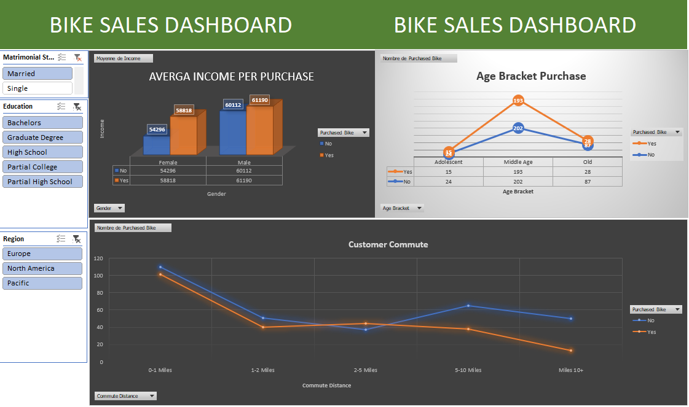

EXCEL
Projet : Analyse des comportement d'achat de vélos (Excel – Dataset sur les ventes de vélos)
Objectif du projet :
Identifier les profils types d’acheteurs et comprendre les variables influençant la décision d’achat d’un vélo à partir d’un ensemble de données démographiques et économiques

Ce projet s’appuie sur un dataset contenant des informations sur des individus
(revenu, âge, statut matrimonial, profession, éducation, nombre d’enfants, type de logement, distance de trajet, etc.)
et une variable cible : “Purchased Bike” (Oui/Non).
le travail s’est articulé autour de quatre étapes principales :
-
Nettoyage et structuration de données :
- Vérification et suppression des doublons.
- Normalisation des catégories (ex. “Married/Single”, “Yes/No”).
- Conversion des champs numériques et catégoriels pour faciliter l’analyse.
- Création de segments d’âge et de revenus pertinents pour l’étude. Analyse exploratoire :
- Étude des relations entre les variables sociodémographiques et la décision d’achat.
- Identification des tendances :
- Les acheteurs sont souvent des professionnels mariés, avec revenu supérieur à 50 000 $, et âgés de 35 à 50 ans.
- Les non-acheteurs se situent davantage parmi les jeunes adultes à revenu moyen.
- Utilisation de tableaux croisés dynamiques pour croiser les variables clés (revenu, distance de trajet, âge, occupation, etc.).
- Conception d’un dashboard Excel clair et visuel intégrant :
- Diagrammes de répartition par genre, âge, revenu et distance de trajet.
- interactifs (segments) pour naviguer entre les profils.
- Indicateurs clés de performance : pourcentage d’acheteurs, répartition par région, revenu moyen des acheteurs.
- Utilisation de tableaux croisés dynamiques pour croiser les variables clés (revenu, distance de trajet, âge, occupation, etc.).
- Recommandations marketing pour cibler les segments à fort potentiel (professionnels urbains à revenu élevé).
- Valorisation de l’analyse pour appuyer la stratégie de segmentation client et les campagnes de communication. Compétences démontrées :
- Nettoyage et structuration de données sous Excel.
- Utilisation de formules avancées, tableaux croisés dynamiques, graphiques interactifs et dashboards.
- Analyse descriptive et interprétation statistique.
- Présentation visuelle et storytelling à partir de données.